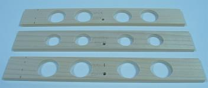
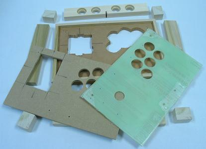
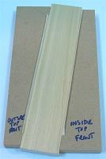
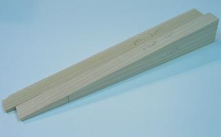
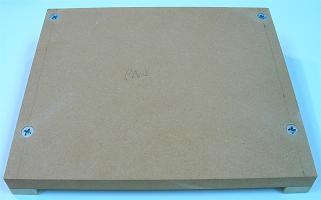
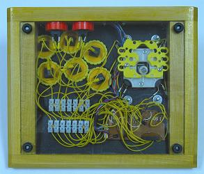
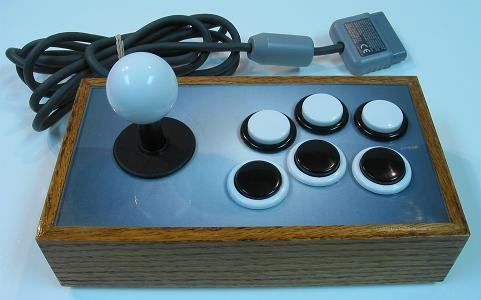
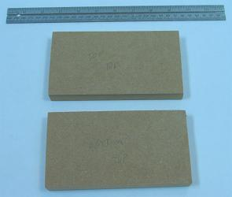
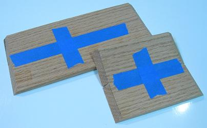

Example Summarized Controller Builds
This section contains more summarized descriptions of some controller builds. As I complete controllers, more examples will be added. And I should get better as I go, so do not assume earlier examples are done by my best means. At this point, I have seven controllers planned that have yet to be added.
Contents
The Idiot Box (Completed April 2008)
Stripes (Completed August 2008)
Bumblebee (Completed October 2008)
Snuff Box (Completed October 2008)
The Idiot Box
Completed April 2008
The goal in making this controller was to do some humble, straight-forward, easy steps, and not use a router. Pretty much all the cutting was done using either a drill or a rotary saw, with the joystick still being top-mounted.
The devices and wiring:
- 1 Sanwa JLF
- 1 Wire Harness
- 1 Seimitsu White 35mm Ball Top
- 6 Seimitsu Black w/ Clear Plungers PS-14-GN 30mm Buttons
- 4 Seimitsu Black w/ Clear Plungers PS-14-DN 24mm Buttons
- 1 X-Wiz QD
- ~12' 20 AWG Insulated Wire
- ~20 Various Connectors
The control panel uses three layers. The bottom layer has small rails glued to the top and thick sides glued to the bottom to form the box. It has large enough holes and bolts placed 80mm by 40mm to fit the Sanwa JLF, and Seimitsu LS-32 and LS-40 using S-plates.
The basic measurements for the materials:
- 1 12" x 8" x 1/2" Wood
- 1 11-1/4" x 7-1/4" x 1/4" Wood
- 1 11-1/4" x 7-1/4" x .093" Acrylic Glass
- 1 10-1/2" x 6-1/2" x 1/8" Wood
- 2 12" x 3/8" x 3/8" Wood
- 2 7-1/4" x 3/8" x 3/8" Wood
- 2 8" x 1-1/2" x 3/4" Wood
- 1 10-1/2" x 1-1/2" x 3/4" Wood
- 3 10-1/2" x 1-1/2" x 1/4" Wood
- 4 1-1/2" x 1-3/16" x 1" Wood
The same basic measurements for the materials in approximated centimeters:
- 1 30cm x 20cm x 1.25cm Wood
- 1 28cm x 18cm x .5cm Wood
- 1 28cm x 18cm x .25cm Acrylic Glass
- 1 26cm x 16cm x .25cm Wood
- 2 30cm x .75cm x .75cm Wood
- 2 18.5cm x .75cm x .75cm Wood
- 2 20cm x 4cm x 2cm Wood
- 1 26cm x 4cm x 2cm Wood
- 3 26cm x 4cm x .5cm Wood
- 4 4cm x 3cm x 2.5cm Wood
The original purchased materials:
- 1 48" x 24" x 1/2" MDF
- 1 48" x 24" x 1/4" MDF
- 1 24" x 18" x .093" Lexan
- 1 48" x 24" x 1/8" Hardboard
- 2 36" x 3/8" x 3/8" Poplar
- 2 24" x 1-1/2" x 3/4" Poplar
- 2 24" x 1-1/2" x 1/4" Poplar
The poplar was purchased from Lowes and the rest was purchased from Home Depot, all together about $30 with a lot of excess materials leftover at the finish.
The basic dimensions were all cut using a rotary saw ran along clamped, guiding boards. (The standard plexiglas was later replaced with lexan because it cracked because I did not drill the pilot holes for the hole saw to the full size; I will get plexi to work in the future.)
To make uniform support blocks so the bottom panel could be surrounded and the rubber feet would not stick out so much, I glued together two 1/4" and one 3/4" poplar pieces to get a thickness of 1-1/4". After drying and using 60 grit sandpaper supported by some flat scrap wood, I sanded away most the excess glue and shaved the thickness down to 1-3/16". I wanted to use the rotary saw to cut the four blocks, but instead used a hand saw to avoid injury. I would have had to use a longer length of wood for this to be done safely with a rotary saw.

To make and fit enclosed small buttons in the back of the joystick, I started with three 1/4" cuts of poplar. I clamped them together and made four pilots holes and a cord hole through them. I then separated them, laid each on a piece of scrap wood, and gently made holes in them with hole saws. One of the boards got 24mm holes, while the other two boards got 30mm holes. I then glued them together with the 24mm in the middle and sanded them. I sanded in a keyhole for the cord to finish the back.

I sanded the thin pieces even and glued rails using a scrap board and weights for drying to the top sides of the main 1/2" panel. I then sanded and fit the other two control panel layers into and between the rails. I screwed the panels together using 3/4" non-tapered screws and drilled the button holes through all the panels at once.
I measured out the body for the LS-40 joystick, making dimensions on the bottom 1/2" panel, and the width of the S-plate and length of the JLF mounting plate, marking those on the middle 1/4" panel. I marked an area to remove around the buttons in the bottom 1/2" panel to make room for the nuts on the buttons. I then cut appropriately, later adding little coves to fits the tabs on the JLF and the switches on the LS-40.
I put several layers of polyurethane on the middle 1/4" layers to make it stronger and thicker (to marginally make it level with the Seimitsu S-plate; this does not work very well; just get panels of the needed thickness). I flatly glued all the sides and corner blocks to form the box under the 1/2" control panel. I placed them on level ground with a scrap board and weights on top so they would glue straight; the corner blocks were attached later using only hand clamping for a few minutes. I had to then saw away some of one of the blocks to make room for joysticks.
I began sanding the box using 60 grit sandpaper taped on a flat piece of scrap wood. I used the same sanding and some sweat to shave the sides to various extents to fake a 45 degree chamfer bit. I filled many gaps and porous parts of the box using white wood filler. Then I sanded the filler and everything even using 220 grit sandpaper.
Using a cheap glossless black spray paint, I put a couple layers on the bottom panel. I put three layers of the same on the box a few minutes apart, then repeated this a day later. Unfortunately, the seams in the connections of the layers of the box still showed. I wish that I would have very thoroughly used filler and sanding, and made sure that the sides were very flat and even.
Because I had seams showing, I decided to make a wood texture in the polyurethane finish. If the sides were filled and sanded very thoroughly, I could have put a few layers of glossless spray paint, then a few even layers of poly, with no sanding between, and probably gotten that "piano finish".
I probably also should have used some masking tape and paper to cover the space where the mounting plate rests; this could have made making clearance for the S-plate easier. I maybe also should have just lined the whole inside where the panels meet as not to risk unevenness.
I sandwiched a white piece of paper in the control panel and put the layers together. I had to sand a couple isolated spots so they came together flatly. I then installed the devices and wired them all to the designed PCB. I left a bit of a mess, but it works.
I attached the bottom panel with screws through the rubber feet.
It turned out to be a pretty nice controller. The layers of the panel came together well. It is actually a lot easier to change out joysticks and buttons with three control panel layers.
The only regret was that I did not sand and fill the sides of the controller better; I should have used a primer and then saw I needed more filler instead of starting with the finishing paint.
Stripes
Completed August 2008
The goal in making this controller was to utilize both the routed solid box design and the layering of different woods. Admittedly, I thought this design would be easier than it turned out to be, but the results turned out great. Some of the steps can be done with different tools, but I would not recommend attempting this kind of build if you are new to woodworking; yet it might be easier for others with the instructions given here that I had to compile and exploit in making this controller.
The devices and wiring:
- 1 Sanwa JLF w/ Covers
- 1 Wire Harness
- 1 Sanwa White 35mm Ball Top
- 7 Sanwa White OBSN-30 30mm Buttons (with Seimitsu Clear Nuts)
- 4 Seimitsu White PS-14-DN 24mm Buttons
- 1 Button Plug
- 1 PS2 Dual Shock A (Late Version) (cord replaced using D-Sub connectors)
- ~16' 24 AWG Insulated White Wire
- ~8' 24 AWG Insulated Brown Wire
- 19 Combined Pairs of Terminals in European-Style Terminal Strips
- 22 Non-Insulated, Single-Barrel Quick Disconnects
- ~12" Clear 3/16" Heat-Shrink Tubing
Basically a thick box made from two layers each of 1/2" boards of alternating woods is rabbet-routed to fit the panels. The joystick was top-mounted to a thick panel that was covered with a thin layer of plexiglas.
The basic measurements for the materials:
- 1 10-1/2" x 7-1/2" x 3/4" Wood
- 2 10-1/2" x 7-1/2" x .093" Acrylic Glass
- 2 12-1/2" x 2" x 1-1/2" Wood (45 Degree Miter Cut, 7/8" x 1/2" Top Rabbet Cut, 1/8" x 1/2" Bottom Rabbet Cut)
- 2 9-1/2" x 2" x 1-1/2" Wood (45 Degree Miter Cut, 7/8" x 1/2" Top Rabbet Cut, 1/8" x 1/2" Bottom Rabbet Cut)
- 5-3/8" x 2-3/4" PCB Box from 1/2" x 1/4" Wood and .093 Acrylic Glass
The same basic measurements for the materials in approximated centimeters:
- 1 26.5cm x 19cm x 2cm Wood
- 2 26.5cm x 19cm x .25cm Acrylic Glass
- 2 32cm x 5cm x 4cm Wood (45 Degree Miter Cut, 2.25cm x 1.25cm Top Rabbet Cut, .25cm x 1.25cm Bottom Rabbet Cut)
- 2 24.5cm x 5cm x 4cm Wood (45 Degree Miter Cut, 2.25cm x 1.25cm Top Rabbet Cut, .25cm x 1.25cm Bottom Rabbet Cut)
- 13.5cm x 7cm PCB Box from 1.25cm x .5cm Wood and .25cm Acrylic Glass
The original purchased materials:
- 1 48" x 24" x 3/4" MDF
- 1 48" x 24" x 1/4" MDF
- 1 14" x 10" x .093" Plexiglas
- 1 24" x 18" x .093" Lexan
- 2 48" x 1-1/2" x 1/2" Poplar
- 2 48" x 1-1/2" x 1/2" Oak
The poplar and oak were purchased from Lowes and the rest was purchased from Home Depot, all together about $40 with a lot of excess materials leftover at the finish.
First thing to do was glue together the four 48" x 1-1/2" x 1/2" boards of poplar and oak in an alternating pattern. I used a lot of yellow wood glue and about 10 various clamps padded with a lot of cardboard. It turned out to be very messy, but the mess ensured the boards came together strongly and seemlessly. After making sure they were straight, I let them sit for a few days.
After the wood dried, I noticed the pieces were not entirely even; I'm not sure if they even could have been made so that they were. They had a very slight step pattern, moving about 1/32" between the top and bottom board. This made me wish I had a powerful jointer. But fortunately the top and bottom of the combined boards were parallel and could be worked decently. I had to sand away a lot of excess glue later using strong sandpaper; probably would have been easier with a hand scraper.
Using a table saw, I cut each of the four sides from the big board, leaving about an inch each to make them easier to work. Then I tried 45 degree cuts using the miter gauge to see how well the boards came together. It did not work very well on many attempts. So I came up with making and using a miter sled to cut them in a complementary manner, setting the boards on the sled using double-sided tape and a framing square and combination square (this definitely is the most surefire way to cut miter joints I can think of). I lined them up to cut at 45 degrees and the same needed sizes and they came out surprisingly great. Make sure to mark and number the complementary corners in case things are not entirely square.
Not only are miter joints good looking, but they make it easier to cut the rabbets for the panels. Using a straight bit and a router table, I transitioned in about eight steps (using the same step on all the sides so they would be identical) through each top inside piece until the rabbets were 7/8" deep and 1/2" wide. Then I did the same on the inside bottoms in three steps to get them to 1/8" deep and 1/2" wide.
I cut the main panel 10-1/2" x 7-1/2" x 3/4" and arranged the sides to see how well it fit; it fit pretty much perfectly. Then, using a 1/4" brad-point bit, 24mm, 30mm, and 1-1/8" forster bits and a drill press, I bored holes in the back side centered and spaced 36mm; I decided to put the cord hole off-center so the home/guide button would be by itself; the outside 30mm and 24mm holes were each about 3/16" deep; I did the rest through the back using the 1-1/8" bit; this would have been easier perhaps if I designed the box using a 1/2" main panel.
Using a framing clamp and some white glue, I put the box together, scraping away excess glue with a butter knife I rubbed into a towel. I set the panel inside and put them all on a level surface and tightened the clamps. I let it dry for 24 hours. I later routed the top transitioning with a chamfer bit. I also had to bore some holes to give the nuts and bolts on the joystick room to fit. So that the box remained pale, I finished simply using 80, 150, 220, 320, and 400 grit sandpaper, some vacuuming, and four layers of clear wax. That's the box.
I used plexiglass for the top layer since it does not scratch or collect dirt as easily; I used lexan on the bottom because it is more durable. To cut the acrylic glass panels, I simply attached the acrylic to straight pieces of MDF using double-sided tape set so the proper size of panel was against the wood, and cut with the acrylic face-down on a router table with a flush-trim bit. Cutting acrylic is very easy this way.
Drilling the top panels was not as easy. I taped the top panel and main panel together with the desired layout set in the proper spot. I made eight 1/16" pilot holes in all the centers using a drill press. Being very careful and drilling very slowly, I transitioned the holes in the acrylic in about five steps up to 1/4" to fit the arbor in my hole saws. Using my 24mm and 30mm hole saws in my drill press, I very slowly cut each hole for the buttons and joystick in the acrylic. I then used a 1-1/2" forstner bit to give clearance for the buttons in the bottom of the main panel. With the panel faced down on some scrap wood for support, I went through the rest using hole saws in my drill press; after the experience, I would not recommend boring wood using hole saws in your drill press.
One thing I decided is that this initial drilling of the main panel is also the best time to drill holes for the bolts used to secure the joystick. I lined up the mounting plate on the panel and drilled the holes for the bolts.
Since I just got a bushing piece for my router, I made a guide panel from pieces of MDF the size of the mounting plate plus 3/8" (for the bushing) and another 2mm of padding. A pattern pit can also be used with this kind of template. I used double-sided tape to attach the guide to the panel and ran the router to cut about 8mm deep to fit the mounting plate. I then made another hole throught the rest of the panel to fit the housing for the joystick. I set the panel in the box and drilled holes for attaching it to the box, and divots using a #10 countersink bit.
I figured my wiring layout and decided to make a small box to fit the PCB. I made the box using simple cuts of 1/2" x 1/4" of wood and glued them in the right location beneath the panel to form a box with an opening for soldered wires and the cord. I cut some more lexan to use as a cover on the box. The box turned out about 5-3/8" x 2-3/4" x 5/8". With the main panel done, I sanded out some protruding cuts and hung it up using some wire. I spray painted it white, making sure to keep the spray can moving and not within 12" from the panel (you do not want uneven paint on something that you want completely even and flat). I secured small rubber feet and the bottom panel to the box by aligning them and drilling small holes with my drill press. The panels were finished.
The wiring turned out to be a pain because I had to learn some things about removing analog sticks. First I got rid of most the attaching solder using braid and flux paste, then I pulled them out with some force. I neutralized the sticks using 10K resistors and bridging the nodes in the click switches (which took a while to figure out; I should have done more step testing); I also had to put a resistor between the 7 and 8 pins to substitute for the one in the ribbon face. I wired using white wire for the signals and brown for the commons to keep with the color theme. I replaced the cord with a white one using a D-sub connector and a multimeter to figure what terminal in the plug matched which wire in the cord, threading the cord through the hole in the box before attaching the connector. I had to bridge the 2 and 8 pin in the PCB so the different cord would match.
I threaded the various signals and commons to the terminals in strips (secured with #4 3/4" screws) arranged kind of like the buttons. I linked the buttons using matching wire cut to a length that could reach any of the terminals, and non-insulated, single-barrel QD's which I threaded through the barrel and soldered because I do not trust crimping to make and hold contacts; the joystick made contact simply using the wire harness. I covered the terminals using heat-shrink tubing and a blow dryer. The wiring was then finished.
I got the artwork for the panel from a comic of mine. I scanned it, polarized and traced and recolored it in my drawing program, and printed it out on thick paper. I planted my top panel on it (with the film still covering it) and taped it to the excess (not double stick this time). I traced the buttons and joystick with a pencil and ran my exacto blade along the outside of panel to get the right dimensions. I then removed the panel and cut the buttons and joystick with the exacto as well.
I colored various components including the side button nuts, the joystick covers, and the button plug using white plastic paint to keep with the theme. I used clear Seimitsu nuts (which are fairly inexpensive) on the Sanwa buttons (you have to on some of the buttons in the Vewlix layout).
It was then time for the whole thing to come together. I mounted the main panel on the box with #10 sinking 1-1/2 screws. I mounted the joystick in the panel with #10 1" bolts and nuts and washers. I took the film off the acrylic and secured it with the art under it to the main panel simply using the nuts on the buttons. With things shaped precisely, there is no need to attach the top panel using screws; it feels very nice without them. I attached the buttons to the QDs and the wire harness to the joystick and the cord to the D-sub connectors, screwed the PCB box with #4 1/2" screws, and then attached the bottom panel with the rubber feet and those same screws.
This controller turned out surprisely well. I thought I could get it done faster, but I am not disappointed with the results. The only real issue was the unevenness of the glued boards. But I do not have a jointer, and would not have trusted my table saw with trying to even them. I found ways to get through this issue anyways.
Bumblebee
Completed October 2008
The goal in this controller build was to make a compact, slanted joystick exploiting the small size of the Seimitsu LS-33. Since the controller is so thin, long supports on the sides are used to keep things sturdy.
The devices and wiring:
- 1 Seimitsu LS-33
- 1 Sanwa Yellow 30mm Ball Top
- 6 Sanwa Yellow OBSN-30 30mm Buttons
- 2 Sanwa Yellow OSBN-24 24mm Buttons
- 1 PS2 DS A (Late Version) Extracted Soldered PCB
- 16 .110" 22-26 AWG Insulated Quick Disconnects
- 8 .187" 18-20 AWG Noninsulated Quick Disconnects
- ~150" 24 AWG Stranded Insulated Yellow Wire
- 2 7-Point European-Style Small Terminal Strips (cut from 12-point ones)
- Set of 9-Pin D-Sub Connectors and Hood
The box basically slants 1" (25mm) from the front to the back side of the control panel. Smaller supports shaped like the sides are attached to the sides. The depth of the box given below can definitely be trimmed by 1/16" (1.5mm) as I ended out with about 1/8" (3mm) space between the bottom of the stick and the bottom panel.
The basic measurements for the materials:
- 1 8-1/2" x 7" x 1/2" Wood (Face dimensions; front and back cut at 8o)
- 1 8-1/2" x 7" x .093" Acrylic
- 1 8-1/2" x 6-29/32" x .093" Acrylic
- 1 10" x 2-1/16" x 3/4" Wood (Inside face dimensions; slants upward 8o on top)
- 1 10" x 1-1/16" x 3/4" Wood (Inside face dimensions; slants downward 8o on top)
- 2 6-29/32" x 2-1/16" to 1-1/16" x 3/4" Wood
- 2 6-29/32" x 1-5/16" to 5/16" x 3/4" Wood
The same basic measurements for the materials in approximated centimeters:
- 1 21.5cm x 18cm x 1.3cm Wood (Face dimensions; front and back cut at 8o)
- 1 21.5cm x 18cm x .25cm Acrylic
- 1 21.5cm x 17.75cm x .25cm Acrylic
- 1 25.5cm x 52cm x 2cm Wood (Inside face dimensions; slants upward 8o on top)
- 1 25.5cm x 27cm x 2cm Wood (Inside face dimensions; slants downward 8o on top)
- 2 17.75cm x 52cm to 27cm x 2cm Wood
- 2 17.75cm x 33cm to 8cm x 2cm Wood
The original purchased materials:
- 1 48" x 2-1/2" x 3/4" Poplar
- 1 48" x 24" x 1/2" MDF
- 1 10" x 8" x .093 Plexiglas
- 1 10" x 8" x .093 Lexan
The poplar was purchased from Lowes while the other materials were purchased from Home Depot, all together about $15 with a lot of MDF leftover at the finish.


Slanting the box can be done in a few ways. It can be done with planing, but in this build the slants will be cut. First an 8 degree rip cutting jig is needed; I made an 8 degree cut on the end of a panel of MDF, then a 0 degree cut, to make a diagonal-cutting template; I used double-stick tape to put boards in the jig and run diagonal cuts. There is no needs to be exact in the placement of the diagonal cuts, just needing parts to be as thick and thin as the ends of the final pieces. I taped the side and support boards flush using a flat surface; I then cut through both at the needed front thicknesses, then the right distance from those cuts, to make identical sides and supports of the right dimensions.

Now to make the base control panel and the front and back sides, bevel cuts (or later planing) are needed; I set my table saw to 8 degrees and cut those pieces to the proper dimensions. So the box would come together nicely, I taped the panel to its supports and drilled with countersink the screws attaching them together; I ran the holes in the panel separately wider so the screws could slide through and make the panel more flush with its supports. Now the box should be attached around this steady structure. Keep in mind, the middle parts of the supports could be removed to make more room and have accurate corner supports, but that is not a good idea for a really slim stick like this.
I masked the control panel using masking tape in preparation for gluing the box, but this was not a good idea as the surface of the tape can attach to to the glue. It would have been better if I used some wax paper or something like that. I should have also made the side button and plug holes first. I then placed the face of the control panel on a piece of .093" acrylic and a couple pieces of paper (spacers) on a flat surface. I then glued the side pieces on the supports using the proper spacing.
So the box would be sturdier, I added some dowel holes. I made a dowel placement template by drilling a perpendicular hole near the corner of a board using a drill press. I then lined up the template for each hole using a flat surface, a side stop block, and more double-sided tape. I glued the rest of the box together using white glue and some clamps. After it dried, I had to wedge the panel out because it was stuck on the tape, and then had to clean away glued tape; lesson learned.
I cut the acrylic panels (plexiglas top, lexan bottom) to the needed dimensions. I taped the two control panels together and ran a hole saw without its center bit through both for each button and the joystick hole. I removed the acrylic and hollowed room for the buttons in the base using a 1-1/2" forstner. I countersunk the mounting plate then taped it squared in its final position against the base panel and ran a 1/4" bit through each mounting hole; then I used a pencil to trace out the plate in the panel. Then I ran a straight router bit in my drill press (a little dangerous) to make a 2mm deep groove for the mounting, then I went the rest of the way through to fit the joystick body. It would have helped if I taped a template for this.
Since the back of the box was not quite flush with the sides, I put some masking tape on the sides and sanded the back even with them. Since I screwed up and forgot to make the side button and plug holes first before gluing the box, I had to tape the box on a panel to run my drill press for this; be very careful to place these so they fit. I then refined the plug hole using a cheap rotary tool; a template also would have been good for this. Since some of the buttons could not fit with the supports in the way, I had to make grooves in the supports for them to fit using a forstner bit.
I contoured the box using a chamfer bit in my router table. Then I sanded down the sides using 220, 320, 400 grit sandpapers. I propped up the box on wires and cleaned it using mineral spirits. I added yellow dye to some polyurethane and brushed it on in four coats in 3 hour increments. I let it dry for 3 days and wet sanded it (rinsing the paper constantly) using 400, 800, 1200, 2000 grit sandpaper (I wished I would have used some rubbing compound at this point). I then used some car glaze followed by some wax and the box was done.
For the PCB I used a PS2 DS A (late version) wired up as shown in the image. I spray painted the control panel black.

I proceeded to wire the controller as usual. I wanted to use some yellow quick disconnects, so I added solder to the wires, inserted them in the disconnects, crimped them, and heated them so the solder would hold the wire inside. I had to bend many switch terminals to make things fit. I cut the cord and lead the wires to the D-Sub connection so the cord could be detached. I replaced the Sanwa button nuts with yellow Seimitsu ones. I added a simple black and yellow background in the control panel, and attached the base panel with small rubber feet and larger holes in the acrylic so the screws would not twist the panel.
This controller turned out great. I could have maybe made it slightly slimmer, and made the finish a little better, and it is a little small for my hands, but it was a good build.
Snuff Box
Completed October 2008

The goal in making this controller was to implement a very small and simple design using smaller buttons with a smaller layout. Since the design is simple, not many different ingredients go into the controller, but some added carving work is needed.
The devices and wiring:
- 1 Seimitsu LS-33
- 1 Seimitsu White 30mm Ball Top
- 4 Seimitsu White PS-14-DN 24mm Buttons (plungers mixed)
- 4 Seimitsu Black PS-14-DN 24mm Buttons (plungers mixed)
- 1 PS1 Extracted Soldered PCB (Made in Philippines)
- ~100" 26 AWG White Stranded Insulated Wire (attached to devices using solder)
The box is basically a surrounded solid design; two 3/4" layers of MDF are carved to house the devices and wiring, and covered on top and bottom by acrylic and on the sides by hardwood. I do understand this design breaks some big rules of great controllers, but this is not meant to have the best utility, it is just for a little fun.
The basic measurements for the materials:
- 2 6-1/2" x 3-1/2" x 3/4" Wood (about .1" planed off one later)
- 2 6-1/2" x 3-1/2" x .093" Acrylic
- 2 7" x 1-5/8" x 1/4" Wood (Miter Cut)
- 2 4" x 1-5/8" x 1/4" Wood (Miter Cut)
The same basic measurements for the materials in approximated centimeters:
- 2 16.5cm x 9cm x 2cm Wood (about .25cm planed off one later)
- 2 16.5cm x 9cm x .25cm Acrylic
- 2 17.5cm x 18.5cm x .5cm Wood (Miter Cut)
- 2 10cm x 18.5cm x .5cm Wood (Miter Cut)
The original purchased materials:
- 1 48" x 24" x 3/4" MDF
- 1 14" x 11" x .093" Plexiglas
- 1 14" x 11" x .096" Lexan
- 1 24" x 2-1/2" x 1/4" Oak
The oak was purchased from Lowes and the rest was purchased from Home Depot, all together about $15 with a lot of MDF leftover at the finish.

The first thing was to saw the MDF into two 6-1/2" x 3-1/2" x 3/4" plates that would fill the core of the controller, housing the various devices and wiring after being carved through.
Next I wanted a resized layout with 30mm spacing appropriate for smaller buttons. I took the Sega player 1 layout and resized the print out using a multiplier of 29mm / 36mm = .8056. I positioned the layout even on the top MDF plate making sure the devices had room to fit nicely where they were positioned. I taped the two MDF plates and layout together strongly and bored 1/8" holes down and all the way through the center of the joystick and each button position. I could now discard the layout sheet and work on the two MDF plates separately.
I used a countersink on the LS-33 mounting plate so it could be flush with the top control panel. Using a drill press, I made sure the mounting holes for the mounting plate were place precisely. I taped the mounting plate in its precise spot and made 3/16" holes down the center of each mounting hole, and traced the mounting plate using a pencil in preparation for routing. I could now drill the main holes for the joystick and buttons, all using a 24mm forstner bit. I then separated the two pieces so routing would be a little easier.
This design means that only about 2mm is routed in the top of the MDF to house the top-mounted plate, and the rest of the joystick is accommodated with space beneath for the housing and switches and shaft and fasteners. I set the top plate on a large panel and padded the area around it with wood of the same thickness. Then I lined the area along the tracings from the mounting plate so I could run a pattern bit around the inside. I actually used the bit in my drill press, which was a bit awkward, but I got it to work. I had to use a chisel afterwards to make the corners in the routing square.
I used a template bit and some tape to route the shapes for the top and bottom acrylic panels. I put the top plate face down and went through it with a 24mm hole saw without a middle bit to make the holes for the top panel. Since the plates were starting to get slightly fragile, I glued the two MDF blocks together between some panels lined with wax paper to make the core whole. After it dried, I cleaned excess glue around the sides and using the same forstner bit in the button holes. It can be disputed when to glue the plates together, but I tend to recommend doing it before things start getting fragile.
I wanted the controller to be very small, so I trimmed the base of the cores. I lightly sanded the top even then taped it to a wide board. Then I supported the ends evenly and moved the jig around over a trimming bit in my router table, taking off about 1/10". This is called planing, and it can also be used in slanting, trimming, and/or evening any panel or box.
It was time to finish carving out the core. You must be very gentle during this stage; the core wood can only take so much; this is some of the toughest work I have done in making a controller. I made space for the nuts and washers to secure the mounting plate using about a 1/2" forstner bit partially down the bottom center of the mounting holes. I made space for the joystick terminals using a 1/2" forstner bit. I made a lot of space for the body of the joystick using various forstner bits (be careful around the mounting holes). Then I bored a couple 30mm holes in the front side of the core to make room for the bodies of the side buttons (they will be secured to the side oak), making sure there is space from them to fit (be gentle for this). I also used a 1/4" bit for a cord hole. I then carved some of the area under the buttons using various forstner bits again to make sure there was room for the trimmed PS1 PCB. I also carved some gaps to link the button and joystick areas. I decided not to bother making room for the LS-33 yellow gate. The core is done, and fragile, but the added sides will make it strong again.

This is another tough part of the build when using miter joints for the sides. Butt joints are not a problem for this design because you can attach two opposing sides, sand them even with the core, then add the other sides. However, it is difficult to make miter joints perfect for this; you must be very exact. I taped together the oak sides so I could cut them identically in my table saw with a 45 degree bevel. I started slightly wide and cut them down slowly until they fit the core nicely. I then made complementary holes for the side buttons and cord using a 24mm forstner and 1/4" bit.
Now to finish and bring the box together. I put masking tape around the sides so paint would not ruin gluing. I sprayed the controller all over from a distance with black spray paint. I let it dry and removed the side masking tape. I then got a flat surface, some spacers the size of the top panel and background, set the face on them, and glued the sides around the core. I let that dry, then masked the top and bottom area for finishing. I sanded the sides down to 400 grit. I brushed the sides with mineral spirits, then added wood conditioner, then some Early American stain; I let the stain sit 5 minutes and rubbed it off using a clean cloth. The grains in the sides continued bleeding stain throughout the day I let it dry, so I had to wipe it clean sometimes. Then I sprayed on four layers of lacquer. Since the oak grains were still prominent in the finish, I decided not to bother with trying to get a flat surface; a filler would have been needed early to get a flat surface with oak. I let the lacquer sit for three days, then added some wax, and removed the masking tape.
I got a PS1 digital Philippines PCB ready for installation by trimming away unneeded area using a rotary tool, and removing the cord using desoldering braid noting first where the colors attach to the PCB. The wiring would all be linked using solder since there is no room for terminals. I made a background for the top by printing a shaded box, tracing the top panel on it, and cutting things out with some scissors and a utility knife. I got the base panel ready by putting it in the box and drilling holes then countersinks to secure the base. I also mixed plungers between the buttons. Everything was ready to come together.

First thing was to bolt the mounting plate and housing (no switches or shaft) of the LS-33 in the core (make sure the washer is between the plate and housing). Then I added the background and top panel, then the buttons secured. Now I attached each ground and signal wire to the PCB with enough slack that the face of the PCB could face away from the buttons. Then I linked all the signals and grounds to the joystick switches, then installed the spring, actuator, switches, and gates for the joystick. Now I linked all the signals and grounds to the buttons. Then I threaded the cord through the hole, soldered it back on the PCB, and hot glued it secured. I plugged it in and tested and made things work. Then I installed the remaining parts of the joysticks, attached the base acrylic panel with sinking screws, and covered the screws with small bumpers to work as feet. The controller was finished.
I have to say this build was much more difficult than I thought it would be, pretty much because it is so small and so many things can go wrong because of that. It turned out to be a nice controller, but it is definitely not as good as a fuller controller. The small buttons are kind of nice I have to admit. But to play this I have to grip the sides with my pinkies and hold things awkwardly. Still it is better than a control pad, and fun to use.